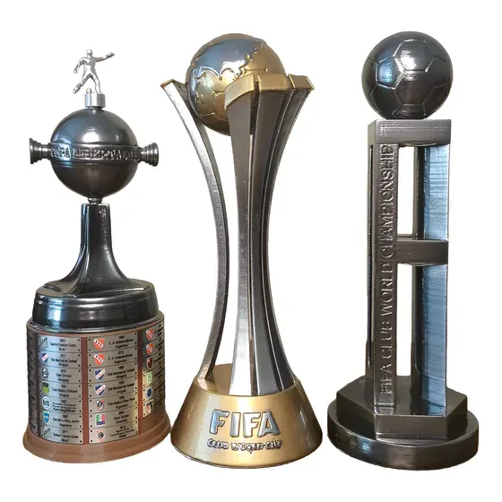
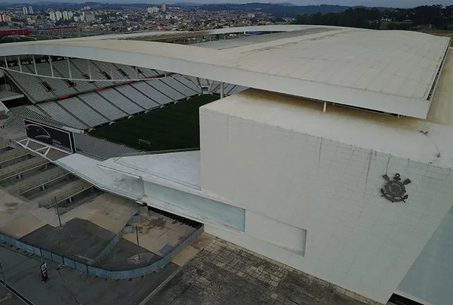

Sobre o Clube

O Corinthians é um dos clubes mais tradicionais do futebol brasileiro. Fundado em 1910 na cidade de São Paulo, o clube possui uma das maiores torcidas do Brasil e uma história cheia de conquistas importantes.
Principais Conquistas

Entre os principais títulos do Corinthians estão o Mundial de Clubes da FIFA, a Copa Libertadores da América, vários Campeonatos Brasileiros e Copas do Brasil. O clube também é conhecido por sua torcida apaixonada.
Estádio

A Neo Química Arena é o estádio do Corinthians localizado em São Paulo. Foi inaugurado em 2014 e também recebeu jogos da Copa do Mundo daquele ano. Hoje é um dos estádios mais modernos do Brasil.